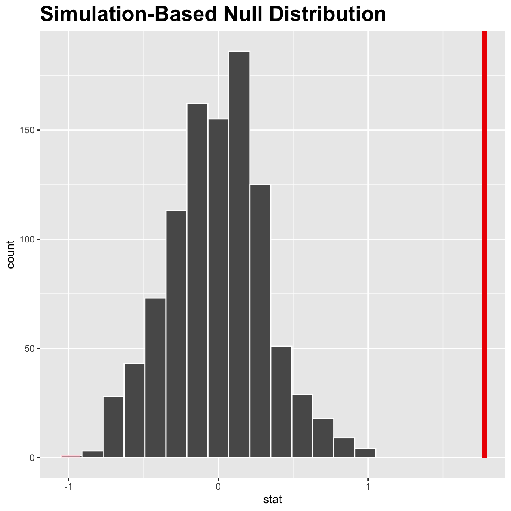

Along this work we will analyze health patters from high schoolers (9th through 12th grade) using the data from the Youth Risk Behavior Surveillance System (YRBSS) survey.
Firstly, we load and inspect it using the function glimpe. There are observations on 13 different variables, some categorical and some numerical. The meaning of each variable can be found by bringing up the help file in the R console:
#Load the data
data(yrbss)
#Inspect the data
glimpse(yrbss)## Rows: 13,583
## Columns: 13
## $ age <int> 14, 14, 15, 15, 15, 15, 15, 14, 15, 15, 15, …
## $ gender <chr> "female", "female", "female", "female", "fem…
## $ grade <chr> "9", "9", "9", "9", "9", "9", "9", "9", "9",…
## $ hispanic <chr> "not", "not", "hispanic", "not", "not", "not…
## $ race <chr> "Black or African American", "Black or Afric…
## $ height <dbl> NA, NA, 1.73, 1.60, 1.50, 1.57, 1.65, 1.88, …
## $ weight <dbl> NA, NA, 84.4, 55.8, 46.7, 67.1, 131.5, 71.2,…
## $ helmet_12m <chr> "never", "never", "never", "never", "did not…
## $ text_while_driving_30d <chr> "0", NA, "30", "0", "did not drive", "did no…
## $ physically_active_7d <int> 4, 2, 7, 0, 2, 1, 4, 4, 5, 0, 0, 0, 4, 7, 7,…
## $ hours_tv_per_school_day <chr> "5+", "5+", "5+", "2", "3", "5+", "5+", "5+"…
## $ strength_training_7d <int> 0, 0, 0, 0, 1, 0, 2, 0, 3, 0, 3, 0, 0, 7, 7,…
## $ school_night_hours_sleep <chr> "8", "6", "<5", "6", "9", "8", "9", "6", "<5…Before we carry on with our analysis, we check if there is any missing values on the dataframe, and compute the summary of statistics and a rough histogram for each variable using the function skimr::skim().
#Skim the data
skimr::skim(yrbss)| Name | yrbss |
| Number of rows | 13583 |
| Number of columns | 13 |
| _______________________ | |
| Column type frequency: | |
| character | 8 |
| numeric | 5 |
| ________________________ | |
| Group variables | None |
Variable type: character
| skim_variable | n_missing | complete_rate | min | max | empty | n_unique | whitespace |
|---|---|---|---|---|---|---|---|
| gender | 12 | 1.00 | 4 | 6 | 0 | 2 | 0 |
| grade | 79 | 0.99 | 1 | 5 | 0 | 5 | 0 |
| hispanic | 231 | 0.98 | 3 | 8 | 0 | 2 | 0 |
| race | 2805 | 0.79 | 5 | 41 | 0 | 5 | 0 |
| helmet_12m | 311 | 0.98 | 5 | 12 | 0 | 6 | 0 |
| text_while_driving_30d | 918 | 0.93 | 1 | 13 | 0 | 8 | 0 |
| hours_tv_per_school_day | 338 | 0.98 | 1 | 12 | 0 | 7 | 0 |
| school_night_hours_sleep | 1248 | 0.91 | 1 | 3 | 0 | 7 | 0 |
Variable type: numeric
| skim_variable | n_missing | complete_rate | mean | sd | p0 | p25 | p50 | p75 | p100 | hist |
|---|---|---|---|---|---|---|---|---|---|---|
| age | 77 | 0.99 | 16.16 | 1.26 | 12.00 | 15.0 | 16.00 | 17.00 | 18.00 | ▁▂▅▅▇ |
| height | 1004 | 0.93 | 1.69 | 0.10 | 1.27 | 1.6 | 1.68 | 1.78 | 2.11 | ▁▅▇▃▁ |
| weight | 1004 | 0.93 | 67.91 | 16.90 | 29.94 | 56.2 | 64.41 | 76.20 | 180.99 | ▆▇▂▁▁ |
| physically_active_7d | 273 | 0.98 | 3.90 | 2.56 | 0.00 | 2.0 | 4.00 | 7.00 | 7.00 | ▆▂▅▃▇ |
| strength_training_7d | 1176 | 0.91 | 2.95 | 2.58 | 0.00 | 0.0 | 3.00 | 5.00 | 7.00 | ▇▂▅▂▅ |
As shown in the tables above, all the variables have missing information, with the highest number of missing values in the race variable. The missing information is probably because some people don’t feel comfortable when giving some personal information, such as race or weight. Finally, looking at the rough histograms we can see that the age is negative skewed, while weight is positive skewed. On the other hand, height is distributed along the center, but hours of sleep and strength training have a multi-modal distribution.
We will first analyze the weightof participants in kilograms. But taking into account that there are 1004 missing values (see the table above), we first filter the data to not include this missing information on the analysis. Then, we create the histogram for high schoolers’ weight using the ggplotfunction.
#Tidy the data by filtering the non-missing values
data_tidy <- yrbss %>%
filter(weight != "NA")
#Create the graph
ggplot(data_tidy, mapping = aes(x=weight)) +
geom_density()+
theme_minimal()+
#Add labels
labs(title = "Weight Distribution",
subtitle = "Positively-skewed distribution",
x = "Weight (Kg)",
y = "Density")+
theme(plot.title = element_text(face = "bold", size = 20),
plot.subtitle = element_text(size = 15),
axis.title = element_text(size = 10),
axis.text = element_text(size = 10))Next, we obtained the main statistics for the weight using the summary function:
#computing statistics
summary(data_tidy$weight)## Min. 1st Qu. Median Mean 3rd Qu. Max.
## 29.9 56.2 64.4 67.9 76.2 181.0The mean value for the weight of high school students is 67.9 kg, with a maximun value of 181 kg and a minimum of 29.9 kg.
Afterwards, we consider the possible relationship between a high schooler’s weight and their physical activity. Hence, we create the graph between the weight of the students and the number of days were they did physical activity for 60+ minutes in the last week.
#Create the graph
ggplot(data_tidy, mapping = aes(x = weight, y = physically_active_7d))+
geom_point()+
theme_minimal()+
#Add labels
labs(title = "Weight vs Physical Activity",
subtitle = "Relationship between the two",
x = "Weight (Kg)",
y = "Days of activity per week")+
theme(plot.title = element_text(family = "Times New Roman", face = "bold", size = (18)),
axis.title = element_text(family = "Times New Roman", size = (10)),
axis.text = element_text(family = "Times New Roman", size = (10)))However, looking at the graph there is no clear relationship between these two variables, probably for the multimodal distribution that physically_active_7d has. Therefore, we decide to create a new variable physical_3plus, which will be yes if they are physically active for at least 3 days a week, and no otherwise.
yrbss <- yrbss %>%
#Create a new variable call physical_3plus to know if they are physically active for at least 3 days a week.
mutate(physical_3plus = ifelse(physically_active_7d >= 3, "yes", "no"))
#Filter the missing values
yrbss %>% filter(!is.na(physical_3plus)) %>%
group_by(physical_3plus) %>%
#Summarizing the data
summarise(count = n()) %>%
#Estimating the proportion of yes and no
mutate(prop= count/sum(count))## # A tibble: 2 x 3
## physical_3plus count prop
## <chr> <int> <dbl>
## 1 no 4404 0.331
## 2 yes 8906 0.669Approximately the 60% of students do physical activities for at least 3 times a week. We estimate a 95% confidence interval of the number of active days for the population proportion of high schoolers that are NOT active 3 or more days per week.
yrbss %>%
group_by(physical_3plus) %>%
#Filter by students that are not active 3+ days per week
filter(physical_3plus == "no") %>%
#Estimate confidence interval
summarise(mean_3less = mean(physically_active_7d, na.rm = TRUE),
sd_3less = sd(physically_active_7d, na.rm=TRUE),
count = n(),
se_3less = sd_3less/sqrt(count),
t_critical = qt(0.975, count-1),
margin_of_error = t_critical * se_3less,
lower = mean_3less - t_critical * se_3less,
upper = mean_3less + t_critical * se_3less
)## # A tibble: 1 x 9
## physical_3plus mean_3less sd_3less count se_3less t_critical margin_of_error
## <chr> <dbl> <dbl> <int> <dbl> <dbl> <dbl>
## 1 no 0.795 0.860 4404 0.0130 1.96 0.0254
## # … with 2 more variables: lower <dbl>, upper <dbl>As shown in the table above, the confidence interval for the high schoolers who are not active 3+ days per week is [0.770, 0.821] days. With a mean value of 0.795 days, that means that students most of students on this category make exercise less than one day a week.
Then, we make a boxplot of physical_3plus vs. weight to see if there is a negative correlation between these two variables. In other words, we will evaluate if the students who don’t exercise 3+ days a week weigh more than the students who do it.
#Create the grph
yrbss_boxplot <- yrbss %>%
filter(!is.na(physical_3plus), !is.na(weight)) %>%
ggplot(aes(x=physical_3plus, y=weight)) +
geom_boxplot() +
theme_minimal() +
theme(plot.title = element_text(face="bold")) +
#Add labels
labs(title = "Weight and Physical Activity",
subtitle = "Increased level of physical activity means heavier people",
y = "Weight (Kg)",
x = "Physical activity") +
theme(plot.title = element_text(face = "bold", size = 20),
plot.subtitle = element_text(size = 15),
axis.title = element_text(size = 10),
axis.text = element_text(size = 10)) +
NULL
yrbss_boxplotHowever, by looking at the graph above students who exercise more are heavier which could be due to the fact of the higher density and weight of muscle.
Boxplots show how the medians of the two distributions compare, but we can also compare the means of the distributions using either a confidence interval or a hypothesis test. Below, we estimate the confidence interval for the two factors (exercise 3+ days per week or not).
yrbss %>%
group_by(physical_3plus) %>%
filter(!is.na(physical_3plus)) %>%
#Estimate confidence interval
summarise(mean_weight = mean(weight, na.rm = TRUE),
sd_weight = sd(weight, na.rm=TRUE),
count = n(),
se_weight = sd_weight/sqrt(count),
t_critical = qt(0.975, count-1),
margin_of_error = t_critical * se_weight,
lower = mean_weight - t_critical * se_weight,
upper = mean_weight + t_critical * se_weight
)## # A tibble: 2 x 9
## physical_3plus mean_weight sd_weight count se_weight t_critical
## <chr> <dbl> <dbl> <int> <dbl> <dbl>
## 1 no 66.7 17.6 4404 0.266 1.96
## 2 yes 68.4 16.5 8906 0.175 1.96
## # … with 3 more variables: margin_of_error <dbl>, lower <dbl>, upper <dbl>There is an observed difference of about 1.77kg (68.44 - 66.67), and we notice that the two confidence intervals do not overlap. It seems that the difference is at least 95% statistically significant. Let us also conduct a hypothesis test.
For making the hypothesis test with a 95% of statistically significant, we compare the means using the t-distribution, where the null hypothesis is if the difference of the means for the two factors (exercise 3+ day per week or not) is equal to zero.
#Hypothesis test
t.test(weight ~ physical_3plus, data = yrbss)##
## Welch Two Sample t-test
##
## data: weight by physical_3plus
## t = -5, df = 7479, p-value = 9e-08
## alternative hypothesis: true difference in means is not equal to 0
## 95 percent confidence interval:
## -2.42 -1.12
## sample estimates:
## mean in group no mean in group yes
## 66.7 68.4When we look at the p-value of the t-test it is less than the significance level (5%). Hence, we reject the null hypothesis and we can conclude that the difference of the means is different from zero. Therefore, there is strong statistical evidence to asseverate that the weight of high schoolers who train 3+ days per week is greater than the students who don’t do it.
inferSubsequently, we will introduce a new function, hypothesize, that falls into the infer workflow. This function also conducting hypothesis tests.
But first, we need to initialize the test, which we will save as obs_diff.
#Initialize the test
obs_diff <- yrbss %>%
specify(weight ~ physical_3plus) %>%
calculate(stat = "diff in means", order = c("yes", "no"))The statistic you are searching for is the difference in means, with the order being yes - no != 0. After we have initialized the test, we need to simulate the test on the null distribution, which we will save as null.
null_dist <- yrbss %>%
specify(weight ~ physical_3plus) %>%
hypothesize(null = "independence") %>%
generate(reps = 1000, type = "permute") %>%
calculate(stat = "diff in means", order = c("yes", "no"))Here, hypothesize is used to set the null hypothesis as a test for independence, i.e., that there is no difference between the two population means. Also, the type argument within generate is set to permute, which is the argument when generating a null distribution for a hypothesis test.
We can visualize this null distribution with the following code:
ggplot(data = null_dist, aes(x = stat)) +
geom_histogram() +
labs(title = "Null Distribution Histogram") +
theme(plot.title = element_text(face = "bold", size = 20))Now that the test is initialized and the null distribution formed, we can visualise to see how many of these null permutations have a difference of at least obs_stat of 1.77?
We can also calculate the p-value for our hypothesis test using the function infer::get_p_value().
null_dist %>% visualize() +
shade_p_value(obs_stat = obs_diff, direction = "two-sided") +
theme(plot.title = element_text(face = "bold", size = 20))
null_dist %>%
get_p_value(obs_stat = obs_diff, direction = "two_sided") ## # A tibble: 1 x 1
## p_value
## <dbl>
## 1 0As you can see, using this the standard workflow we obtained the same result as with the previous calculations, the p-value is near to zero and therefore we reject the null hypothesis and determine that the mean of the weight for students who exercise 3+ day peer week is greater than students who don’t do it. This results, as commented before is probably due to the fact of the students who train has higher density and weight of muscle.